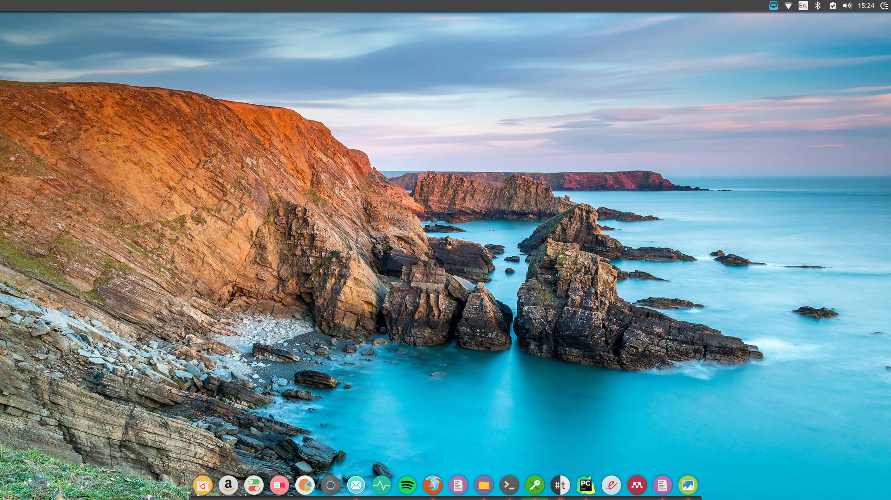

Some Love for Bing
"I don't know, let's Bing it"
Bing. It's the search engine everyone loves to hate. But if there's one thing you have to give it credit for, they really do have some lovely background pictures. Here I just want to give a really quick tutorial on how you can automatically set the Bing picture of the day as your Linux desktop screen saver using python 2.7. (I know, I know, legacy python blah blah I'm a bad person, I just need a particular module which comes in the standard library for 2.7). I took some inspiration from this repo, but personally it didn't really work on my system and kept failing with weird errors, so I figured I'd try and write it from scratch.
First, set the folder where you want to save the image to.
SAVE_FILES_TO = '/home/ed/Pictures/BingWallpapers'
Next, fetch the URL for the photo of the day.
from urllib2 import urlopen
import xml.etree.ElementTree as ET
def get_image():
'''
Return the name and url for the Bing photo of the day
'''
url = 'https://www.bing.com/HPImageArchive.aspx?format=xml&idx=0&n=1&mkt=uk'
page = urlopen(url)
xml = ET.parse(page).getroot()
images = xml.findall('image')
url = 'https://www.bing.com' + images[0].find("url").text
name = images[0].find("startdate").text + ".jpg"
return name, url
Now save this image to the directory you specified.
import sys
import os
from urllib import urlretrieve
def save_image():
'''
Save the image of the day to your wallpapers folder
'''
name, url = get_image()
image_path = os.path.join(SAVE_FILES_TO, name)
if not os.path.exists(SAVE_FILES_TO):
print(SAVE_FILES_TO + ': This directory does not exist')
sys.exit()
if not os.path.isfile(image_path):
urlretrieve(url, image_path)
return True, image_path
else:
print('File exists already')
return False, image_path
Here's a few helper functions that will set the background and screensaver.
import gi
gi.require_version('Gtk', '3.0')
from gi.repository import Gio
def set_gsettings(typ, filename):
gsettings = Gio.Settings.new('org.gnome.desktop' + typ)
gsettings.set_string('picture-uri', 'file://' + filename)
gsettings.apply()
def change_background(filename):
set_gsettings('background', filename)
def change_screensaver(filename):
set_gsettings('screensaver', filename)
Now our main function just sets these, if it hasn't done so already
def main():
success, image_path = save_image()
if success:
change_background(image_path)
change_screensaver(image_path)
Finally, a little loop to wait for an internet connection
import socket
import time
if __name__ == '__main__':
for i in range(15):
try:
socket.create_connection(('www.google.com', 80))
main()
sys.exit()
except socket.gaierror:
time.sleep(2)
print('Retrying')
print('Connection Failed')
sys.exit()
Now, to make this script automatically change the screen saver each day, just navigate to Startup Applications (in Ubuntu), make a new entry, and set the command to python2 path/to/BingWallpapers.py
And we're done! Would you look at that.
